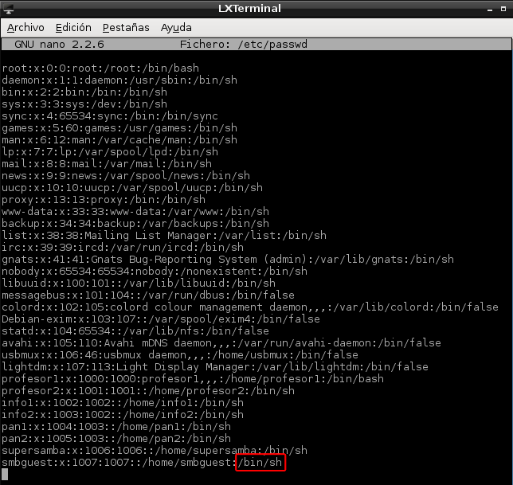
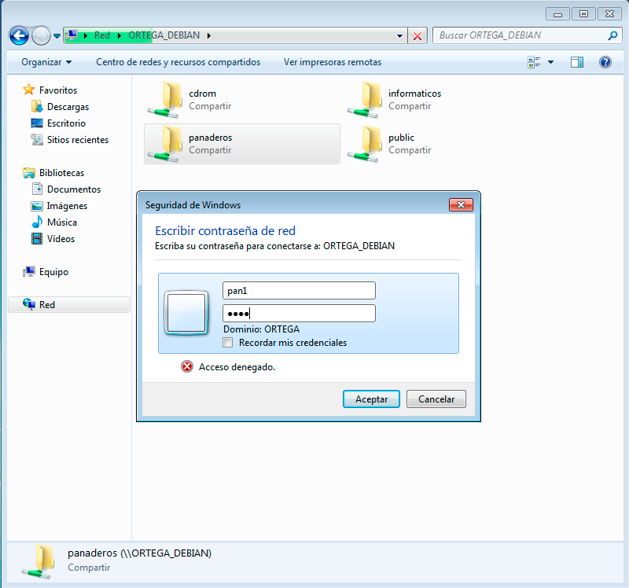
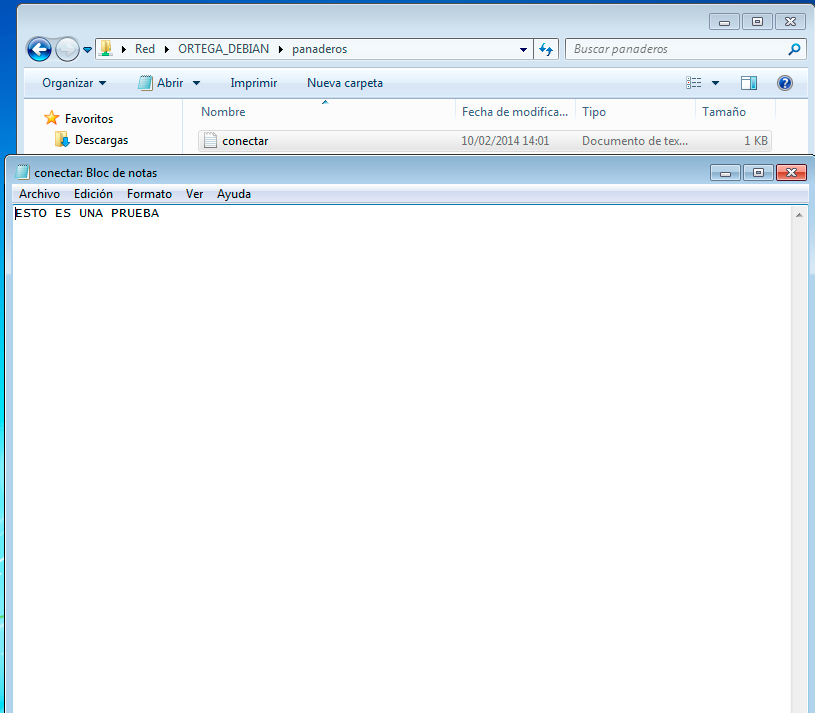
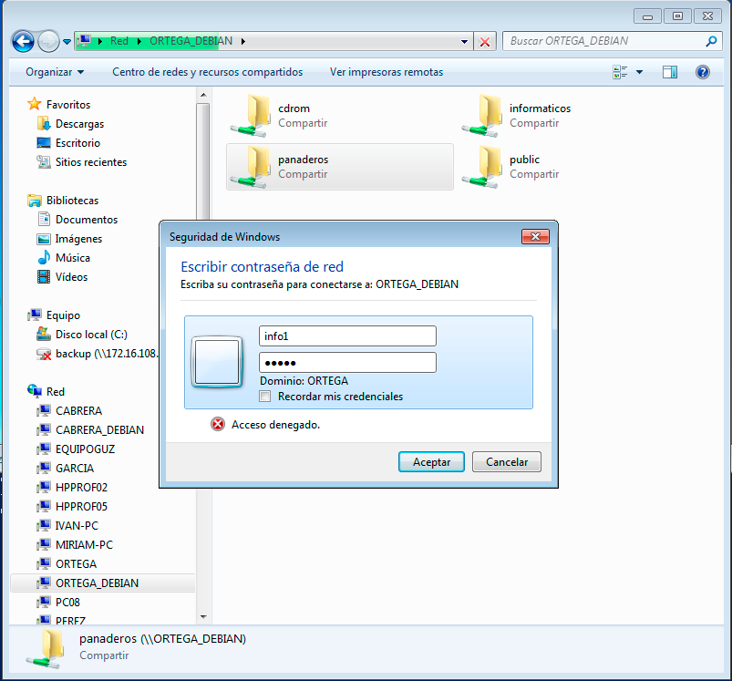
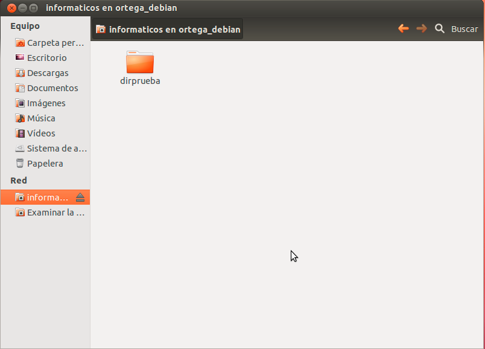

- Módulo: Sistemas Operativos
- Título del trabajo: A2: Recursos compartidos
- Componentes del grupo: Alejandro Ortega Freire
- Curso Académico: 2013/2014
- Fecha de entrega: 19 de febrero de 2014
1.1.- Configurar el equipo con las siguientes características:
- SO: Debian 7.1.0
- IP: 172.16.108.2XX (donde XX corresponde al nº de cada puesto, 05 en este caso)
- Máscara de red: 255.255.0.0
- Gateway: 172.16.1.1
- Servidor DNS: 172.16.1.1
NOTA 1: Para configurar las características del equipo es necesario modificar los archivos /etc/network/interfaces y /etc/resolv.conf. Para ello se siguieron los siguientes pasos:
- Hacer una copia de los archivos originales.
- cp /etc/network/interfaces /etc/network/interfaces_original
- cp /etc/resolv.conf /etc/resolv.conf_original
- Con la aplicación nano modificar los archivos de la siguiente manera:
Imágenes 1 y 2: Archivo interfaces original (izquierda) y después de modificar (derecha).
Imagen 3: Resultado de la modificación del archivo resolv.conf indicando el servidor DNS (nameserver).
- Comprobación de las modificaciones.
Imagen 4: Resultado del comando ifconfig.
- Nombre de equipo: primer-apellido-del-alumno (ortega, en este caso)
Imagen 5: Nombre del equipo mostrado al inicio de la sesión.
- Tarjeta de red VBox: modo puente.
- Instalar openssh-server (para ello se utilizó el Gestor de paquetes Synaptic).
Imagen 6: Instalación de openssh-server.
 Principio del Punto 1.1 | Principio |
Principio del Punto 1.1 | Principio |  Fin del punto 1.2
Fin del punto 1.2
1.2.- Preparativos Servidor Samba
- Crear los siguientes grupos y usuarios
- Grupo informáticos con los usuarios info1, info2 y supersamba.
- Grupo panderos con los usuarios pan1, pan2 y supersamba.
- Crear el usuario smbguest.
- Crear el grupo usuariosamba y dentro poner a todos los usuarios de panaderos, informáticos, supersamba y smbguest.
NOTA 2:
Los comandos usados para crear los usuarios y grupos fueron los siguientes:
- groupadd nombre-grupo: crea un nuevo grupo.
- useradd -g nombre-grupo-propietario -m nombre-usuario: crea un nuevo usuario.
- Parámetros:
- g: establece el grupo principal del usuario.
- m: crea la carpeta home si es que no existe.
- adduser nombre-usuario nombre-grupo: añade un usuario a un grupo ya existente.
Imagen 7: Creación de grupos y usuarios.
Imágenes 8 y 9: Comprobación de la creación de usuarios y grupos a través de la apertura de los ficheros /etc/passwd y /etc/group, respectivamente.
- Impedir que nadie pueda usar el usuario smbguest para entrar en la máquina mediante login. Para ello es necesario modificar el fichero /etc/passwd de la siguiente manera:
smbguest:x:1001:1001:,,,:/home/smbguest:/bin/false

Imágenes 10 y 11: Archivo /etc/passwd original (izquierda) y modificación (derecha).
Principio del Punto 1.2 | Principio | Fin del punto 1.3
1.3.- Instalar y configurar Samba
- Instalar el servidor Samba en Linux. Para ello hizo falta añadir nuevos repositorios en el fichero /etc/apt/sources.list, además de ser necesario hacer una actualización (upgrade) de los paquetes ya instalados dado que daba un error indicando que había varios mal instalados previamente.
Imagen 12: Añadir repositorios a la lista en /etc/apt/sources.list.
Imágenes 13 y 14: Actualizar los paquetes instalados (apt-get upgrade) y los repositorios (apt-get update).
- Instalar el servidor Samba:
apt-get -y samba samba-common smbclient samba-doc cifs-utils

Imagen 15: Instalar servidor Samba.
- Configurar el servidor Samba:
[global]
netbios name = PRIMER-APELLIDO-ALUMNO (ORTEGA_DEBIAN, en este caso)
workgroup = AULA108
server string = Servidor Samba del PC 05
security = user
map to guest = bad user
guest account = smbguest
[cdrom]
path = /dev/cdrom
guest ok = yes
read only = yes
[public]
path = /var/samba/public
guest ok = yes
read only = yes
[panaderos]
path = /var/samba/panaderos
read only = no
valid users = @panaderos, @informaticos
[informaticos]
path = /var/samba/informaticos
read only = no
valid users = info1, info2
Imagen 17: Rellenar el archivo smb.conf.
- Crear los recursos compartidos:
Se crean las carpetas de los recursos compartidos con los permisos siguientes:
- /var/samba/public: usuario propietario "supersamba", grupo propietario "usuariosamba". Poner permisos 770.
- /var/samba/panaderos: usuario propietario "supersamba", grupo propietario "panaderos". Poner permisos 770.
- /var/samba/informaticos: usuario propietario "supersamba", grupo propietario "informaticos". Poner permisos 770.
NOTA 3: Comandos:
- mkdir nombre-carpeta: para la creación de las carpetas.
- chown nombre-usuario-propietario.nombre-grupo-propietario: para modificar el usuario y grupo propietario de las carpetas.
- chmod 770 nombre-carpeta: cambiar los permisos de las carpetas a 770 (rwxrwx---).
NOTA 4: Información:
- [public] es un recurso compartido accesible para todos los usuarios en modo lectura.
- [cdrom] es el recurso dispositivo cdrom de la máquina donde está instalado el servidor Samba.
Imagen 18: Crear los recursos compartidos.
- Añadir usuarios a Samba
Después de crear los usuarios en el sistema, hay que añadirlos a Samba.
- Ahora que se ha terminado con el servidor hay que reiniciar el servicio para que se lean los cambios de configuración. Para ello en Debian 7 se utiliza el comando /etc/init.d/samba restart. Esta expresión para y comienza de nuevo los servicios nmbd y smbd.
Imagen 21: Reiniciar el servicio Samba.
- Comprobar la configuración del servidor con el comando: testparm.

Imagen 22: Testparm.
Principio del Punto 1.3 | Principio | Fin del punto 1.5
1.4.- Cliente Windows GUI
- Desde un cliente de Windows se accede a los recursos compartidos del servidor Samba, comprobando el acceso como si fuéramos un panadero, un informático y un invitado. El recurso [panaderos] está establecido que puedan acceder los usuarios del grupo informaticos y panaderos. Al intentar acceder desde Windows al recurso con un usuario del grupo informaticos se produce un error indicando que se carecen de los permisos
necesarios para entrar. Esto se debe a que inicialmente la carpeta panaderos en la máquina servidor del recurso (Debian 7) se estableció que el usuario propietario fuera supersamba y el grupo propietario de la carpeta fuera panaderos, teniendo control total ambos y ninguno para otros grupos o usuarios (ver Imagen 18). Por ello al intentar entrar con un usuario informático deniega el acceso. Para poder entrar
en el directorio, en la máquina servidor se cambia el grupo propietario de la carpeta /var/samba/panaderos a usuariosamba, grupo que incluye a panaderos e informáticos.
Imagen 23: Cambio de permisos en /var/samba/panaderos.
- Comprobar los accesos a los recursos compartidos.
NOTA 5:Después de cada conexión se quedan guardada la información en el cliente. Para cerrar las conexiones SMB/CIFS que ha realizado el cliente al servidor, se usa el comando:
C:>net use * /d /y.
Imagen 24: Ejemplo de cierre de las conexiones SMB/CIFS.
Imagen 25: Búsqueda de la máquina servidor a través de su nombre NetBIOS (ORTEGA_DEBIAN).


Imágenes 26 y 27: Acceso a [panaderos] con el usuario pan1.

Imágenes 28 y 29: Acceso a [panaderos] con el usuario info1.
Imágenes 30 y 31: Acceso a [informaticos] con el usuario info1.
Imágenes 32 y 33: El acceso a [public] no requiere de usuario ni contraseña al ser un recurso público.
- Desde un cliente de Windows se comprueba que en las carpetas [panaderos] e [informaticos] es posible crear carpetas/directorios. En cambio el recurso [public] está establecido que puedan entrar todos los usuarios pero que sea de sólo lectura (read only), por lo que impide la creación de ficheros o directorios, como muestra la imagen siguiente:
Imagen 34: Error al intentar crear carpeta en [public] al ser de sólo lectura.
Principio del Punto 1.4 | Principio | Fin del punto 1.5
1.5.- Cliente Windows comandos
- En el cliente Windows, para consultar todas las conexiones/recursos conectados se introduce el comando: C:> net use. De inicio al ejecutar net use se comprueba que NO hay conexiones establecidas.
- En el cliente Windows, para cerrar las conexiones SMB al servidor se introduce el comando: C:> net use * /d /y.
- Comprobar los accesos a los recursos compartidos:
NOTA 6:
Para establecer conexión con los recursos compartidos se utilizó la expresión
net use letra_unidad \\ip-servidor-samba\recurso_compartido /user:nombre_usuario /persistent:yes de la cual se puede indicar lo siguiente:
- net use -> comando que permite conectar un equipo a un recurso compartido o lo desconecta. Si se usa sin opciones, muestra las conexiones del equipo.
- Parámetros:
- letra_unidad: letra de la unidad donde se va a montar el recurso compartido (por ejemplo N:).
- \\ip-servidor-samba\recurso_compartido: dirección del recurso al que se quiere acceder (por ejemplo \\172.16.108.205\panaderos).
- user: usuario que accederá al recurso (por ejemplo pan1).
- persistent:yes: controla el uso de conexiones de red persistentes. Si su valor es "yes" guarda las conexiones a medida que se establece y se restaura en el siguiente inicio de sesión.
Imagen 35: Examinar la red con el comando net view.
Imagen 36: Acceso a [panaderos] con los usuarios pan1 e info1.
Imagen 37: Acceso a [informaticos] con el usuario info1.
Imagen 38: Acceso a [public] con el usuario smbguest (usuario invitado).
Imagen 39: Ejemplo de net use tras el acceso a uno de los recursos compartidos.
Principio del Punto 1.5 | Principio | Fin del punto 1.6
1.6.- Cliente GNU/Linux GUI
- En el caso de la máquina cliente será necesario instalar smbclient (Samba cliente) y cifs-utils.
- Comprobar que se tiene acceso al recurso compartido desde un cliente GNU/Linux GUI. Para ello se pueden usar herramientas como:
- Nautilus en GNOME.
- Konqueror en KDE.
- En Ubuntu se puede ir a "Lugares -> Conectar con el servidor...".
- Se puede instalar la aplicación smb4k.
- Existen otras para otros entornos gráficos.
- En este caso como cliente GNU/Linux se utilizó una distribución Ubuntu 12.04 con interfaz gráfica GNOME. Como herramientas se usaron dos: Nautilus y smb4k.
- Comprobar los accesos a los recursos compartidos con Nautilus:
Imágenes 40 y 41: Examinar la red.
Imágenes 42 y 43: Acceso a [panaderos] con el usuario pan1.


Imágenes 44 y 45: Acceso a [panaderos] con el usuario info1.

Imágenes 46 y 47: Acceso a [informaticos] con el usuario info1.
Imágenes 48 y 49: El acceso a [public] no requiere de usuario ni contraseña al ser un recurso público.
- Ejemplo de acceso al recurso compartido [panaderos] con el usuario pan1 a través de smb4k (instalado con el gestor de paquetes synaptic):
Imágenes 50 y 51: Montar el recurso compartido [panaderos] usando el usuario pan1.

Imágenes 52 y 53: Abrir el recurso con Nautilus.
- Comprobación de que se pueden crear carpetas/archivos en [panaderos] e [informaticos]. [public] es sólo lectura.
Imágenes 54 y 55: Creación directorio de prueba en [panaderos] en la máquina cliente (Ubuntu). A la derecha se muestra el cambio en la máquina servidor (Debian).
Imágenes 56 y 57: Creación directorio de prueba en [informaticos] en la máquina cliente (Ubuntu). A la derecha se muestra el cambio en la máquina servidor (Debian).
Imagen 58: Error al intentar crear carpeta en [public] al ser de sólo lectura.
Principio del Punto 1.6 | Principio | Fin del punto 1.7
1.7.- Cliente GNU/Linux comandos
- Existen comandos (mount, smbmount y smbclient) que ayudan a acceder vía comandos al servidor Samba desde el cliente.
- En este caso como equipo cliente GNU/Linux se utilizó una distribución Ubuntu 12.04. Desde este equipo se emplearán comandos para acceder a la carpeta compartida.
- Primero se comprueba el uso de las siguientes herramientas:
- Se crean las siguientes carpetas donde se montaran los recursos compartidos:
- /mnt/samba-remoto/panaderos
- /mnt/samba-remoto/informaticos
- /mnt/samba-remoto/public
Imagen 60: Creación de directorios con mkdir.
- Montaje: se procede a montar el recurso compartido deseado de Samba Server (Debian 7), como si fuera una carpeta más del sistema de la máquina cliente (Ubuntu).
Para ello es necesario ser el usuario root y utilizar la expresión "mount -t cifs //ip-servidor-samba/recurso_compartido dirección-carpeta-montaje -o username=nombre-usuario,password=contraseña,workgroup=grupo-trabajo" de la cual se puede indicar lo siguiente:
- mount -> comando que permite conectar un sistema de ficheros con un directorio (punto de montaje) del sistema Linux.
- Parámetros:
- -t cifs: especifica el tipo de sistema de archivos, en este caso "cifs".
- //ip-servidor-samba/recurso_compartido: dirección del recurso al que se quiere acceder (por ejemplo //172.16.108.205/panaderos).
- dirección-carpeta-montaje: directorio donde se va a montar el recurso de la máquina servidor en la máquina cliente (por ejemplo /mnt/samba-remoto/panaderos).
- -o: indica que lo siguiente escrito son opciones de montaje.
- username: usuario que accederá al recurso (por ejemplo pan1).
- password: contraseña del usuario que accederá al recurso.
- workgroup: grupo de trabajo (por ejemplo AULA108).
- Comprobación: se ejecuta el comando df -hT después del montaje.
Imagen 61: Montaje del recurso [panaderos] en la carpeta /mnt/samba-remoto/panaderos y comprobación con el comando df -hT.
Imagen 62: Montaje del recurso [informaticos] en la carpeta /mnt/samba-remoto/informaticos y comprobación con el comando df -hT.
Imagen 63: Montaje del recurso [public] en la carpeta /mnt/samba-remoto/public y comprobación con el comando df -hT.
- Ejemplo creación de fichero pruebaubuntu.txt en la máquina cliente (Ubuntu) en el recurso [panaderos] y comprobación de su aparición en la máquina servidor Samba (Debian).
Imágenes 64 y 65: Creación de pruebaubuntu.txt en la máquina Ubuntu cliente (imagen izquierda) y su aparción en la máquina Debian servidor (imagen derecha).
- Por último para desmontar todos los recursos montados se empleó la expresión umount -a.
Imagen 66: Desmontar todos los recursos.
NOTA 7:
- Como se comprueba todo lo que se escriba en la carpeta de montaje aparece en la máquina del servidor Samba.
- Para montar con comandos un recurso Samba remoto, sin ser el usuario root, es necesario modificar adecuadamente el fichero /etc/fstab.
Principio del Punto 1.7 | Principio | Fin del punto 1.8
1.8.- Preguntas para resolver
- ¿Las claves de los usuarios en GNU/Linux deben ser las mismas que las que usa Samba?
No, pueden ser diferentes.
- ¿Puedo definir un usuario en Samba llamado panadero3, y que no exista como usuario del sistema?
No, todo usuario de Samba debe existir en el sistema. Lo que sí es posible hacer es que un usuario no pueda acceder al sistema, pero sí a Samba.
- ¿Cómo podemos hacer que los usuarios pan1 y pan2 no puedan acceder al sistema pero sí a Samba?
Para hacer que pan1 y pan2 no puedan acceder al sistema per sí a Samba sería necesario modificar el fichero /etc/passwd de la siguiente manera:
pan1:x:1004:1003:/home/pan1:/bin/false
pan2:x:1005:1003:/home/pan2:/bin/false
Al igual que se hizo en la práctica con el usuario smbguest en el punto 1.2, imágenes 10 y 11.
- Añadir el recurso [homes] al fichero smb.conf según los apuntes. ¿Qué efecto tiene?
Si se añade el recurso [homes] se define automáticamente un recurso de red por cada usuario conocido por Samba. Este recurso, por defecto, está asociado al directorio de conexión de cada usuario en el ordenador en el que Samba está instalado. En la siguiente imagen se muestra el montaje del "home" del susuario pan1.
Imagen 67: Ejemplo de montaje del home de pan1. Comprobación con el comando df -hT.
Principio del Punto 1.8 | Principio
Alejandro Ortega Freire 1ºASIR
Implantación de Sistemas Operativos